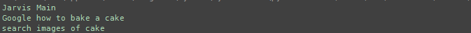
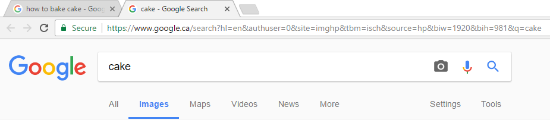
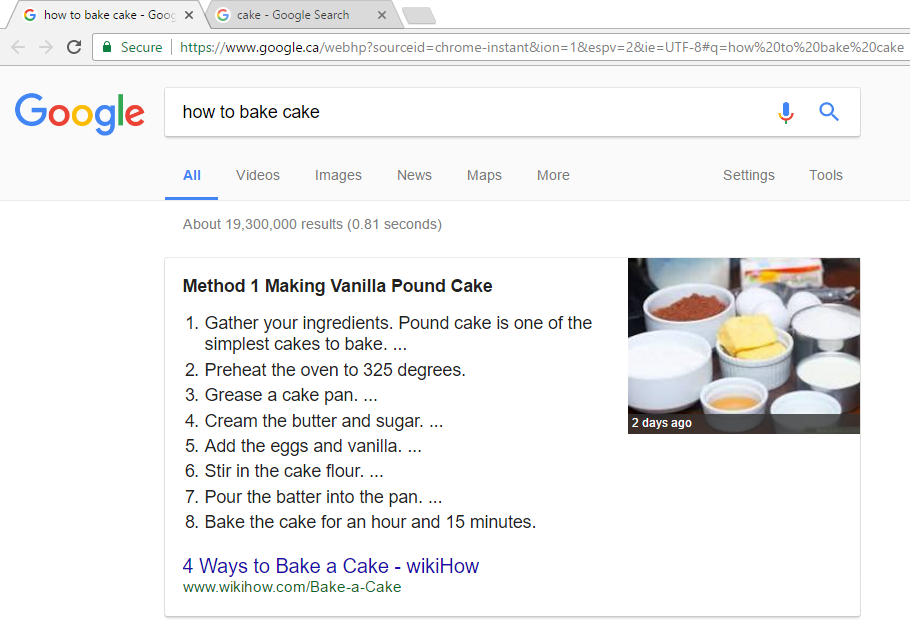

Jarvis (Python)
Introduction
Jarvis has been my side project since I started going to school. A python program that has no interface, it is completely controlled via voice recognition. The application is currently capable of controlling parts of a computer, opening and closing applications. Jarvis can also create notes (Soon to be integrated into google drive for cloud storage across multiple PC's), check and filter my email into corrosponding labels, spam, important, inbox. Setting multiple alarms, giving a detailed current weather or forecast using a json object from Openweathermap. Jarvis can also search via google, for images or plain search, and select search queries to open the page. Jarvis can navigate chrome, opening new tabs, websites, or changing tabs, plus closing of course. The program can also type for you, or enter special key inputs. Keep in mind this list is ever expanding as I have more and more time to work on the project. The final goal would be complete control of my computer, including a mobile phone version so I can control my pc via from while away from home.
class jarvis(object):Class definition
print("Jarvis Main")Print Jarvis To Console
for x in range(250): Run 250 times
voiceIn = lib.record() voiceIn is the string that the recorded string becomes
lib.functioncheck(voiceIn) voiceIn is compared against functions after being stripped down. If functions match it executes the function
os.system('/__main__.py')After program runs 250 open the idle program, closing this one.
I have added pseudo code so it is easier to understand.
This is the main running body of the application. It starts up, prints to console the main program is running (during idle a smaller lighter weight program runs), and when it hears something it sends that recording as a string into the functioncheck() method. Which will check then strip that string down into a simple request. If the program finds the request to match a parameter it will execute that function of the program then re run. This program will run 250 times, which in an office enviroment will last about 25 minutes. The time that this program will run does depend on noise levels.
Weather output for today.
Yeilds results
 This is just one of the many functions jarvis can perform. It opens a new instance of chrome, as I do not have one open, and will open two new tabs one searching how to bake a cake, the other for images of cakes. I find this exceptionally useful when I am busy coding and require a search made while typing. That and full screen games as no tabbing out of the game is required.

The request for Jarvis to type the following phrase out.

The results of the above photo where Jarvis is instructed to type out a phrase.
More Examples to come the Library file for Jarvis can be found here